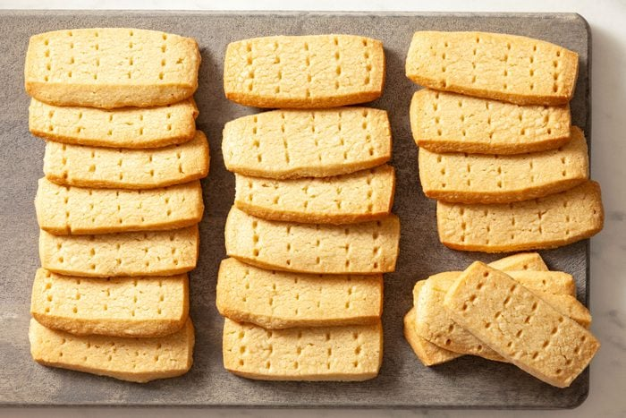

Total Time Prep: 15 min. + chilling Bake: 20 min./batch + cooling
This three-ingredient traditional Scottish shortbread recipe makes beautifully buttery, crumbly biscuits to elevate tea time. Like Caledonia’s incomparable whiskies, artisan gins, Irn-Bru, exceptional seafood and haggis, Scottish shortbread is among the area’s most famous epicurean delights. A Scottish shortbread cookie recipe is simple. You’re a mere three ingredients and an hour away from a plate of crumbly, buttery cookies. Or, as they’re called across the pond, biscuits. Scottish shortbread is one of our favorite easy cookie recipes to master. Chilling the dough before baking is a must if you want to make the best shortbread, as the technique prevents the shortbread from spreading and renders the cookies a beautiful crispness with a gorgeous crumb. This recipe makes a ton of shortbread, so it’s a stellar Christmas cookie exchange recipe, but if you enjoy an afternoon tea break, nothing beats dipping a finger of Scottish shortbread into a hot brew.
Preheat oven to 325°. Cream butter and brown sugar until light and fluffy, 5-7 minutes. Add 3-3/4 cups flour; mix well. Turn dough onto a floured surface; knead for 5 minutes, adding enough remaining flour to form a soft dough.